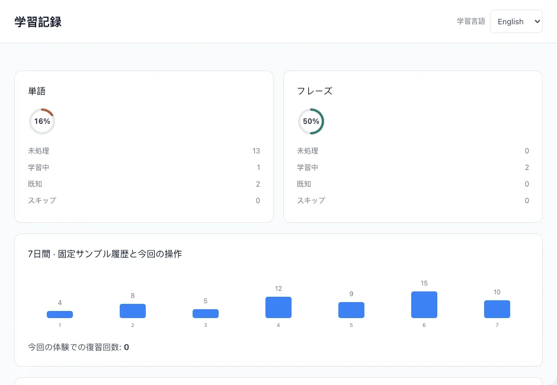
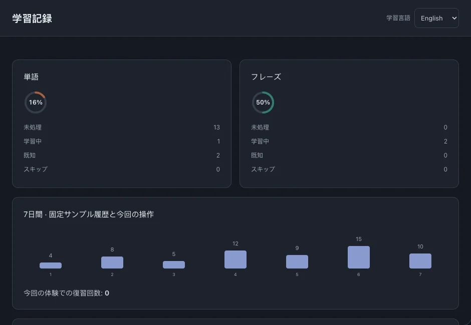

学習記録
学習状態、復習記録、ファイルの進捗から次に学ぶ内容を選べます。語学力を採点する指標ではありません。
このページの目次
単語とフレーズの状態
未処理・学習中・既知・スキップを別々に数え、単語とフレーズを分けて表示します。



最近の復習
7日間の図は最近の復習活動を示します。復習の記録で更新されますが、回数は習得語数ではありません。
ファイルの学習進捗
学習指数では、既知・スキップを全量、学習中を半分、未処理をゼロとして集計します。
- 学習記録のファイル別進捗から、読み続けたいファイルを開きます。